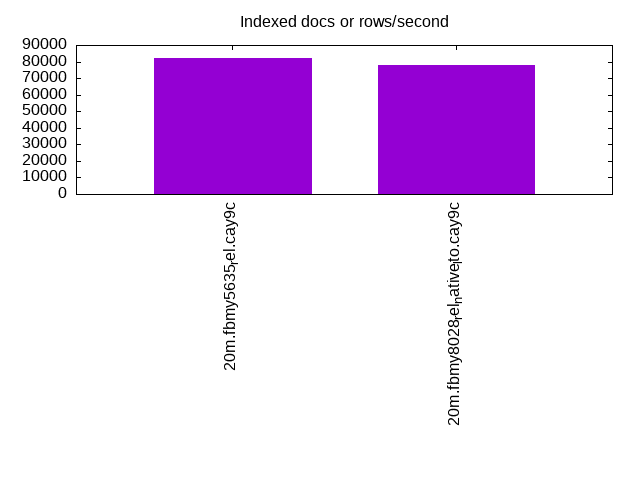

This is a report for the insert benchmark with 20M docs and 1 client(s). It is generated by scripts (bash, awk, sed) and Tufte might not be impressed. An overview of the insert benchmark is here and a short update is here. Below, by DBMS, I mean DBMS+version.config. An example is my8020.c10b40 where my means MySQL, 8020 is version 8.0.20 and c10b40 is the name for the configuration file.
The test server has 8 AMD cores, 16G RAM and an NVMe SSD. It is described here as the Beelink. The benchmark was run with 1 client and there were 1 or 2 connections per client (1 for queries, 1 for inserts). The benchmark loads 20M rows without secondary indexes, creates secondary indexes, loads another 20M rows then does 3 read+write tests for one hour each that do queries as fast as possible with 100, 500 and then 1000 writes/second/client concurrent with the queries. There is one table per client. The database is cached by the storage engine and the only IO is for writes. Clients and the DBMS share one server. The per-database configs are in the per-database subdirectories here.
The tested DBMS are:
The numbers are inserts/s for l.i0 and l.i1, indexed docs (or rows) /s for l.x and queries/s for q*.2. The values are the average rate over the entire test for inserts (IPS) and queries (QPS). The range of values for IPS and QPS is split into 3 parts: bottom 25%, middle 50%, top 25%. Values in the bottom 25% have a red background, values in the top 25% have a green background and values in the middle have no color. A gray background is used for values that can be ignored because the DBMS did not sustain the target insert rate. Red backgrounds are not used when the minimum value is within 80% of the max value.
| dbms | l.i0 | l.x | l.i1 | q100.1 | q500.1 | q1000.1 |
|---|---|---|---|---|---|---|
| 20m.fbmy5635_rel.cay9c | 76336 | 82377 | 29498 | 2779 | 2611 | 2559 |
| 20m.fbmy8028_rel_native_lto.cay9c | 61538 | 77907 | 25740 | 2459 | 2352 | 2348 |
This table has relative throughput, throughput for the DBMS relative to the DBMS in the first line, using the absolute throughput from the previous table.
| dbms | l.i0 | l.x | l.i1 | q100.1 | q500.1 | q1000.1 |
|---|---|---|---|---|---|---|
| 20m.fbmy5635_rel.cay9c | 1.00 | 1.00 | 1.00 | 1.00 | 1.00 | 1.00 |
| 20m.fbmy8028_rel_native_lto.cay9c | 0.81 | 0.95 | 0.87 | 0.88 | 0.90 | 0.92 |
This lists the average rate of inserts/s for the tests that do inserts concurrent with queries. For such tests the query rate is listed in the table above. The read+write tests are setup so that the insert rate should match the target rate every second. Cells that are not at least 95% of the target have a red background to indicate a failure to satisfy the target.
| dbms | q100.1 | q500.1 | q1000.1 |
|---|---|---|---|
| fbmy5635_rel.cay9c | 100 | 499 | 998 |
| fbmy8028_rel_native_lto.cay9c | 100 | 499 | 998 |
| target | 100 | 500 | 1000 |
l.i0: load without secondary indexes. Graphs for performance per 1-second interval are here.
Average throughput:
Insert response time histogram: each cell has the percentage of responses that take <= the time in the header and max is the max response time in seconds. For the max column values in the top 25% of the range have a red background and in the bottom 25% of the range have a green background. The red background is not used when the min value is within 80% of the max value.
| dbms | 256us | 1ms | 4ms | 16ms | 64ms | 256ms | 1s | 4s | 16s | gt | max |
|---|---|---|---|---|---|---|---|---|---|---|---|
| fbmy5635_rel.cay9c | 99.866 | 0.130 | 0.004 | 0.001 | 0.071 | ||||||
| fbmy8028_rel_native_lto.cay9c | 99.734 | 0.194 | 0.069 | 0.003 | 0.078 |
Performance metrics for the DBMS listed above. Some are normalized by throughput, others are not. Legend for results is here.
ips qps rps rmbps wps wmbps rpq rkbpq wpi wkbpi csps cpups cspq cpupq dbgb1 dbgb2 rss maxop p50 p99 tag 76336 0 0 0.0 34.6 13.0 0.000 0.000 0.000 0.174 7523 22.7 0.099 24 0.7 1.8 0.2 0.071 77212 70422 20m.fbmy5635_rel.cay9c 61538 0 0 0.0 36.9 12.0 0.000 0.000 0.001 0.199 6369 22.7 0.104 30 0.7 1.9 0.6 0.078 62029 55439 20m.fbmy8028_rel_native_lto.cay9c
l.x: create secondary indexes.
Average throughput:
Performance metrics for the DBMS listed above. Some are normalized by throughput, others are not. Legend for results is here.
ips qps rps rmbps wps wmbps rpq rkbpq wpi wkbpi csps cpups cspq cpupq dbgb1 dbgb2 rss maxop p50 p99 tag 82377 0 0 0.0 31.6 12.5 0.000 0.000 0.000 0.155 254 12.7 0.003 12 1.5 2.5 1.3 0.008 NA NA 20m.fbmy5635_rel.cay9c 77907 0 0 0.0 30.0 11.9 0.000 0.000 0.000 0.156 410 12.7 0.005 13 1.4 2.7 1.9 0.009 NA NA 20m.fbmy8028_rel_native_lto.cay9c
l.i1: continue load after secondary indexes created. Graphs for performance per 1-second interval are here.
Average throughput:
Insert response time histogram: each cell has the percentage of responses that take <= the time in the header and max is the max response time in seconds. For the max column values in the top 25% of the range have a red background and in the bottom 25% of the range have a green background. The red background is not used when the min value is within 80% of the max value.
| dbms | 256us | 1ms | 4ms | 16ms | 64ms | 256ms | 1s | 4s | 16s | gt | max |
|---|---|---|---|---|---|---|---|---|---|---|---|
| fbmy5635_rel.cay9c | 99.829 | 0.169 | 0.003 | nonzero | 0.064 | ||||||
| fbmy8028_rel_native_lto.cay9c | 99.751 | 0.211 | 0.037 | 0.001 | 0.074 |
Performance metrics for the DBMS listed above. Some are normalized by throughput, others are not. Legend for results is here.
ips qps rps rmbps wps wmbps rpq rkbpq wpi wkbpi csps cpups cspq cpupq dbgb1 dbgb2 rss maxop p50 p99 tag 29498 0 9 1.1 73.7 29.9 0.000 0.038 0.002 1.038 6179 28.9 0.209 78 2.8 4.6 1.9 0.064 29118 26182 20m.fbmy5635_rel.cay9c 25740 0 8 1.0 67.9 26.5 0.000 0.038 0.003 1.054 5712 27.2 0.222 85 3.0 4.9 2.6 0.074 25672 22525 20m.fbmy8028_rel_native_lto.cay9c
q100.1: range queries with 100 insert/s per client. Graphs for performance per 1-second interval are here.
Average throughput:
Query response time histogram: each cell has the percentage of responses that take <= the time in the header and max is the max response time in seconds. For max values in the top 25% of the range have a red background and in the bottom 25% of the range have a green background. The red background is not used when the min value is within 80% of the max value.
| dbms | 256us | 1ms | 4ms | 16ms | 64ms | 256ms | 1s | 4s | 16s | gt | max |
|---|---|---|---|---|---|---|---|---|---|---|---|
| fbmy5635_rel.cay9c | 2.714 | 97.286 | nonzero | 0.002 | |||||||
| fbmy8028_rel_native_lto.cay9c | 1.647 | 98.353 | nonzero | 0.001 |
Insert response time histogram: each cell has the percentage of responses that take <= the time in the header and max is the max response time in seconds. For max values in the top 25% of the range have a red background and in the bottom 25% of the range have a green background. The red background is not used when the min value is within 80% of the max value.
| dbms | 256us | 1ms | 4ms | 16ms | 64ms | 256ms | 1s | 4s | 16s | gt | max |
|---|---|---|---|---|---|---|---|---|---|---|---|
| fbmy5635_rel.cay9c | 99.611 | 0.389 | 0.008 | ||||||||
| fbmy8028_rel_native_lto.cay9c | 99.556 | 0.417 | 0.028 | 0.018 |
Performance metrics for the DBMS listed above. Some are normalized by throughput, others are not. Legend for results is here.
ips qps rps rmbps wps wmbps rpq rkbpq wpi wkbpi csps cpups cspq cpupq dbgb1 dbgb2 rss maxop p50 p99 tag 100 2779 0 0.0 4.1 0.3 0.000 0.000 0.041 3.268 10725 12.9 3.860 371 2.8 4.6 3.8 0.002 2765 2541 20m.fbmy5635_rel.cay9c 100 2459 0 0.0 3.5 0.1 0.000 0.000 0.035 1.078 9656 13.4 3.926 436 2.8 4.8 4.4 0.001 2445 2221 20m.fbmy8028_rel_native_lto.cay9c
q500.1: range queries with 500 insert/s per client. Graphs for performance per 1-second interval are here.
Average throughput:
Query response time histogram: each cell has the percentage of responses that take <= the time in the header and max is the max response time in seconds. For max values in the top 25% of the range have a red background and in the bottom 25% of the range have a green background. The red background is not used when the min value is within 80% of the max value.
| dbms | 256us | 1ms | 4ms | 16ms | 64ms | 256ms | 1s | 4s | 16s | gt | max |
|---|---|---|---|---|---|---|---|---|---|---|---|
| fbmy5635_rel.cay9c | 2.054 | 97.946 | nonzero | 0.003 | |||||||
| fbmy8028_rel_native_lto.cay9c | 1.188 | 98.812 | nonzero | 0.003 |
Insert response time histogram: each cell has the percentage of responses that take <= the time in the header and max is the max response time in seconds. For max values in the top 25% of the range have a red background and in the bottom 25% of the range have a green background. The red background is not used when the min value is within 80% of the max value.
| dbms | 256us | 1ms | 4ms | 16ms | 64ms | 256ms | 1s | 4s | 16s | gt | max |
|---|---|---|---|---|---|---|---|---|---|---|---|
| fbmy5635_rel.cay9c | 99.717 | 0.283 | 0.009 | ||||||||
| fbmy8028_rel_native_lto.cay9c | 99.633 | 0.322 | 0.044 | 0.018 |
Performance metrics for the DBMS listed above. Some are normalized by throughput, others are not. Legend for results is here.
ips qps rps rmbps wps wmbps rpq rkbpq wpi wkbpi csps cpups cspq cpupq dbgb1 dbgb2 rss maxop p50 p99 tag 499 2611 0 0.0 3.5 0.2 0.000 0.000 0.007 0.407 10155 13.1 3.889 401 2.9 4.8 3.9 0.003 2605 2413 20m.fbmy5635_rel.cay9c 499 2352 0 0.0 3.7 0.2 0.000 0.000 0.007 0.509 9310 13.6 3.959 463 2.9 5.0 4.5 0.003 2318 2158 20m.fbmy8028_rel_native_lto.cay9c
q1000.1: range queries with 1000 insert/s per client. Graphs for performance per 1-second interval are here.
Average throughput:
Query response time histogram: each cell has the percentage of responses that take <= the time in the header and max is the max response time in seconds. For max values in the top 25% of the range have a red background and in the bottom 25% of the range have a green background. The red background is not used when the min value is within 80% of the max value.
| dbms | 256us | 1ms | 4ms | 16ms | 64ms | 256ms | 1s | 4s | 16s | gt | max |
|---|---|---|---|---|---|---|---|---|---|---|---|
| fbmy5635_rel.cay9c | 1.162 | 98.838 | nonzero | 0.003 | |||||||
| fbmy8028_rel_native_lto.cay9c | 1.182 | 98.818 | 0.001 | nonzero | 0.005 |
Insert response time histogram: each cell has the percentage of responses that take <= the time in the header and max is the max response time in seconds. For max values in the top 25% of the range have a red background and in the bottom 25% of the range have a green background. The red background is not used when the min value is within 80% of the max value.
| dbms | 256us | 1ms | 4ms | 16ms | 64ms | 256ms | 1s | 4s | 16s | gt | max |
|---|---|---|---|---|---|---|---|---|---|---|---|
| fbmy5635_rel.cay9c | 99.742 | 0.258 | 0.015 | ||||||||
| fbmy8028_rel_native_lto.cay9c | 99.661 | 0.297 | 0.042 | 0.023 |
Performance metrics for the DBMS listed above. Some are normalized by throughput, others are not. Legend for results is here.
ips qps rps rmbps wps wmbps rpq rkbpq wpi wkbpi csps cpups cspq cpupq dbgb1 dbgb2 rss maxop p50 p99 tag 998 2559 0 0.0 5.4 1.0 0.000 0.000 0.005 1.010 10059 14.0 3.931 438 3.1 3.2 4.5 0.003 2541 2381 20m.fbmy5635_rel.cay9c 998 2348 0 0.0 6.1 1.2 0.000 0.000 0.006 1.275 9404 14.5 4.006 494 3.1 3.4 5.3 0.005 2318 2142 20m.fbmy8028_rel_native_lto.cay9c
l.i0: load without secondary indexes
Performance metrics for all DBMS, not just the ones listed above. Some are normalized by throughput, others are not. Legend for results is here.
ips qps rps rmbps wps wmbps rpq rkbpq wpi wkbpi csps cpups cspq cpupq dbgb1 dbgb2 rss maxop p50 p99 tag 76336 0 0 0.0 34.6 13.0 0.000 0.000 0.000 0.174 7523 22.7 0.099 24 0.7 1.8 0.2 0.071 77212 70422 20m.fbmy5635_rel.cay9c 61538 0 0 0.0 36.9 12.0 0.000 0.000 0.001 0.199 6369 22.7 0.104 30 0.7 1.9 0.6 0.078 62029 55439 20m.fbmy8028_rel_native_lto.cay9c
l.x: create secondary indexes
Performance metrics for all DBMS, not just the ones listed above. Some are normalized by throughput, others are not. Legend for results is here.
ips qps rps rmbps wps wmbps rpq rkbpq wpi wkbpi csps cpups cspq cpupq dbgb1 dbgb2 rss maxop p50 p99 tag 82377 0 0 0.0 31.6 12.5 0.000 0.000 0.000 0.155 254 12.7 0.003 12 1.5 2.5 1.3 0.008 NA NA 20m.fbmy5635_rel.cay9c 77907 0 0 0.0 30.0 11.9 0.000 0.000 0.000 0.156 410 12.7 0.005 13 1.4 2.7 1.9 0.009 NA NA 20m.fbmy8028_rel_native_lto.cay9c
l.i1: continue load after secondary indexes created
Performance metrics for all DBMS, not just the ones listed above. Some are normalized by throughput, others are not. Legend for results is here.
ips qps rps rmbps wps wmbps rpq rkbpq wpi wkbpi csps cpups cspq cpupq dbgb1 dbgb2 rss maxop p50 p99 tag 29498 0 9 1.1 73.7 29.9 0.000 0.038 0.002 1.038 6179 28.9 0.209 78 2.8 4.6 1.9 0.064 29118 26182 20m.fbmy5635_rel.cay9c 25740 0 8 1.0 67.9 26.5 0.000 0.038 0.003 1.054 5712 27.2 0.222 85 3.0 4.9 2.6 0.074 25672 22525 20m.fbmy8028_rel_native_lto.cay9c
q100.1: range queries with 100 insert/s per client
Performance metrics for all DBMS, not just the ones listed above. Some are normalized by throughput, others are not. Legend for results is here.
ips qps rps rmbps wps wmbps rpq rkbpq wpi wkbpi csps cpups cspq cpupq dbgb1 dbgb2 rss maxop p50 p99 tag 100 2779 0 0.0 4.1 0.3 0.000 0.000 0.041 3.268 10725 12.9 3.860 371 2.8 4.6 3.8 0.002 2765 2541 20m.fbmy5635_rel.cay9c 100 2459 0 0.0 3.5 0.1 0.000 0.000 0.035 1.078 9656 13.4 3.926 436 2.8 4.8 4.4 0.001 2445 2221 20m.fbmy8028_rel_native_lto.cay9c
q500.1: range queries with 500 insert/s per client
Performance metrics for all DBMS, not just the ones listed above. Some are normalized by throughput, others are not. Legend for results is here.
ips qps rps rmbps wps wmbps rpq rkbpq wpi wkbpi csps cpups cspq cpupq dbgb1 dbgb2 rss maxop p50 p99 tag 499 2611 0 0.0 3.5 0.2 0.000 0.000 0.007 0.407 10155 13.1 3.889 401 2.9 4.8 3.9 0.003 2605 2413 20m.fbmy5635_rel.cay9c 499 2352 0 0.0 3.7 0.2 0.000 0.000 0.007 0.509 9310 13.6 3.959 463 2.9 5.0 4.5 0.003 2318 2158 20m.fbmy8028_rel_native_lto.cay9c
q1000.1: range queries with 1000 insert/s per client
Performance metrics for all DBMS, not just the ones listed above. Some are normalized by throughput, others are not. Legend for results is here.
ips qps rps rmbps wps wmbps rpq rkbpq wpi wkbpi csps cpups cspq cpupq dbgb1 dbgb2 rss maxop p50 p99 tag 998 2559 0 0.0 5.4 1.0 0.000 0.000 0.005 1.010 10059 14.0 3.931 438 3.1 3.2 4.5 0.003 2541 2381 20m.fbmy5635_rel.cay9c 998 2348 0 0.0 6.1 1.2 0.000 0.000 0.006 1.275 9404 14.5 4.006 494 3.1 3.4 5.3 0.005 2318 2142 20m.fbmy8028_rel_native_lto.cay9c
Insert response time histogram
256us 1ms 4ms 16ms 64ms 256ms 1s 4s 16s gt max tag 0.000 0.000 99.866 0.130 0.004 0.001 0.000 0.000 0.000 0.000 0.071 fbmy5635_rel.cay9c 0.000 0.000 99.734 0.194 0.069 0.003 0.000 0.000 0.000 0.000 0.078 fbmy8028_rel_native_lto.cay9c
TODO - determine whether there is data for create index response time
Insert response time histogram
256us 1ms 4ms 16ms 64ms 256ms 1s 4s 16s gt max tag 0.000 0.000 99.829 0.169 0.003 nonzero 0.000 0.000 0.000 0.000 0.064 fbmy5635_rel.cay9c 0.000 0.000 99.751 0.211 0.037 0.001 0.000 0.000 0.000 0.000 0.074 fbmy8028_rel_native_lto.cay9c
Query response time histogram
256us 1ms 4ms 16ms 64ms 256ms 1s 4s 16s gt max tag 2.714 97.286 nonzero 0.000 0.000 0.000 0.000 0.000 0.000 0.000 0.002 fbmy5635_rel.cay9c 1.647 98.353 nonzero 0.000 0.000 0.000 0.000 0.000 0.000 0.000 0.001 fbmy8028_rel_native_lto.cay9c
Insert response time histogram
256us 1ms 4ms 16ms 64ms 256ms 1s 4s 16s gt max tag 0.000 0.000 99.611 0.389 0.000 0.000 0.000 0.000 0.000 0.000 0.008 fbmy5635_rel.cay9c 0.000 0.000 99.556 0.417 0.028 0.000 0.000 0.000 0.000 0.000 0.018 fbmy8028_rel_native_lto.cay9c
Query response time histogram
256us 1ms 4ms 16ms 64ms 256ms 1s 4s 16s gt max tag 2.054 97.946 nonzero 0.000 0.000 0.000 0.000 0.000 0.000 0.000 0.003 fbmy5635_rel.cay9c 1.188 98.812 nonzero 0.000 0.000 0.000 0.000 0.000 0.000 0.000 0.003 fbmy8028_rel_native_lto.cay9c
Insert response time histogram
256us 1ms 4ms 16ms 64ms 256ms 1s 4s 16s gt max tag 0.000 0.000 99.717 0.283 0.000 0.000 0.000 0.000 0.000 0.000 0.009 fbmy5635_rel.cay9c 0.000 0.000 99.633 0.322 0.044 0.000 0.000 0.000 0.000 0.000 0.018 fbmy8028_rel_native_lto.cay9c
Query response time histogram
256us 1ms 4ms 16ms 64ms 256ms 1s 4s 16s gt max tag 1.162 98.838 nonzero 0.000 0.000 0.000 0.000 0.000 0.000 0.000 0.003 fbmy5635_rel.cay9c 1.182 98.818 0.001 nonzero 0.000 0.000 0.000 0.000 0.000 0.000 0.005 fbmy8028_rel_native_lto.cay9c
Insert response time histogram
256us 1ms 4ms 16ms 64ms 256ms 1s 4s 16s gt max tag 0.000 0.000 99.742 0.258 0.000 0.000 0.000 0.000 0.000 0.000 0.015 fbmy5635_rel.cay9c 0.000 0.000 99.661 0.297 0.042 0.000 0.000 0.000 0.000 0.000 0.023 fbmy8028_rel_native_lto.cay9c